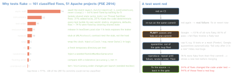
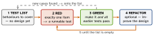

testing · folio
In one line: A flaky test passes and fails on the same code. The cause is nondeterminism — async waits, races, test order, network, time — so remove the source; a retry only measures it. Coverage says what ran, not what was checked. TDD = test list → one failing test → pass → refactor, minutes per loop.
Download PDF Print view LaTeX source


Flakiness grows with size
Flaky share rises linearly with test size — binary size r2 0.82, RAM r2 0.76; once size is accounted for, the tool adds little. Almost 16 % of Google’s tests show some flakiness (2016). Google’s TAP, as reported in 2014: 1.6 M test failures a day, 73 K of them (4.56 %) flaky; a failing test was re-run 10 times on the same version, and one pass labelled it flaky. 96 % of the flaky tests in the FSE study did not depend on OS or hardware — they reproduce on a laptop. Fowler: flaky tests are “a virulent infection” — once people shrug at red, healthy tests’ failures get ignored too.
Xcode & Swift Testing levers
| XCTest · Xcode · xcodebuild | Swift Testing · swift test | |
|---|---|---|
| order | sorted by name; “Randomize execution order” (Xcode 10) = test plan Execution Order: random | shuffled when parallel; source order with --no-parallel |
| parallel | N runner processes; on simulator clones, handed out by class; each clone has its own app container, the original is only the template; -parallel-testing-worker-count N | in-process task groups, on by default, physical devices too; .serialized orders one suite — unrelated suites still run beside it |
| repeat | Xcode 13: fixed iterations · until failure · retry on failure; -test-iterations N + -run-tests-until-failure / -retry-tests-on-failure (no N = 3); -test-repetition-relaunch-enabled YES = new process each time | Swift 6.4: --repeat-until pass|fail --maximum-repetitions N re-runs only matching cases; Xcode 27 repeats single cases, not the plan |
| known issue | XCTExpectFailure("…", strict: false); strict (default) fails once the failure stops | withKnownIssue(isIntermittent: true){…}; without it a missing failure is an issue · .disabled("…") .bug(url) |
| limit | executionTimeAllowance: 600 s default, rounded up to a minute; only with -test-timeouts-enabled YES | .timeLimit(.minutes(n)): whole minutes, ≥1; the shortest limit wins |
| races | -enableThreadSanitizer YES | swift test --sanitize=thread |
| evidence | -collect-test-diagnostics adds sysdiagnoses and log archives to the result | Attachment.record(…) (Swift 6.2); images since Xcode 26.4 |
Coverage — what ran, not what was checked
- Xcode is line-based: execution count per line, never-run code in red. Turn on in the test plan (“Gather coverage for” chosen targets) or
-enableCodeCoverage YES; it slows tests linearly. Skipped tests don’t count; known-issue / expected-failure tests do. - CI:
xcrun xccov view --report --json R.xcresult(--files-for-target,--functions-for-file) ·xccov diff --json old.xcresult new.xcresult·xccov merge. - LLVM counts function, line, region, branch and MC/DC (
-fcoverage-mcdc) — a line can be covered while one of its branches never ran. - Executed ≠ tested: assertion-free tests raise the number too. Enough = bugs rarely escape and nobody fears changing code. Mutation testing checks the asserts: mutate the code, re-run; a surviving mutant = a missing assertion; score = killed / total. Swift: Muter (swap relational operators, remove side effects, change
&&/||, swap ternaries).
CI — fast gate, slow second stage
- CI (Fowler, rev. 2024): everyone pushes to mainline daily · every push builds · self-testing build · fix a broken build immediately · keep it fast (XP’s ten-minute build) · slower suites in a second stage.
- Pin the world:
-destination 'platform=iOS Simulator,name=…,OS=…', the Xcode version, the test plan (-testPlan,-only-test-configuration). GitHub Actionsmacos-latest= macOS 26 arm64 (Oct 2026),xcode-27in preview; one Xcode major per image, patches replaced, images updated weekly. - Xcode Cloud: 25 compute hours a month with the developer membership (paid tiers 100 → 10 000 h). Executable
ci_scripts/beside the project:ci_post_clone.sh,ci_pre_xcodebuild.sh,ci_post_xcodebuild.sh(runs even when xcodebuild failed).
TDD — Canon TDD (Beck, Dec 2023)

- Green-bar patterns (TDD by Example, 2002): Fake It (a constant first) · Triangulate (generalise only from a second example) · Obvious Implementation (just type it).
- Three laws (R. C. Martin): no production code before a failing test · no more test than enough to fail — not compiling counts · no more code than enough to pass. Laws = seconds; red-green-refactor = minutes; “as the tests get more specific, the code gets more generic” ≈ 10 min.
- Canon mistakes: assertion-free tests for coverage · all list items as tests before one passes · deleting asserts or pasting computed values as expected · refactoring while going green · abstracting too soon (“duplication is a hint, not a command”). Fowler: the commonest TDD failure is skipping the refactor.
- Classical (“Detroit”) TDD: real objects, middle-out; mockist (“London”): mocks, outside-in. BDD (Dan North, March 2006; JBehave): “should” names, Given / When / Then (with Chris Matts) = Arrange / Act / Assert. “Is TDD dead?” (DHH, Beck, Fowler, May–June 2014): “test-induced design damage” vs self-testing code as the goal.
Traps
- Retry-on-failure as the CI gate: the build goes green and the race ships. Repeat to measure, with a ticket.
- Xcode 26.4:
continueAfterFailure = false+ a failingasynctest skipped its retries — turn on “Relaunch Tests for Each Repetition”. - Before Xcode 26.4 an expectation never waited on could fire inside a later, unrelated test.
-resultBundlePathmust not exist yet — xcodebuild exits with an error.
Remember
Red twice on one commit = a bug; red once = a flake = still a bug. Repeat to measure, fix the source, cap the quarantine. Coverage finds gaps; mutants find missing asserts. List → red → green → refactor.